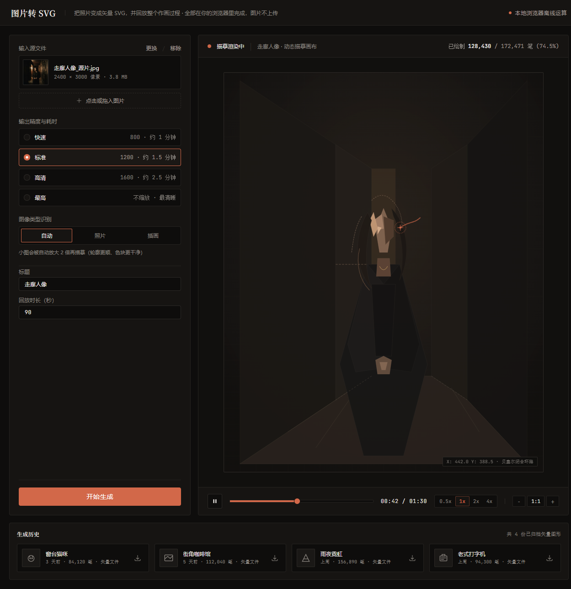
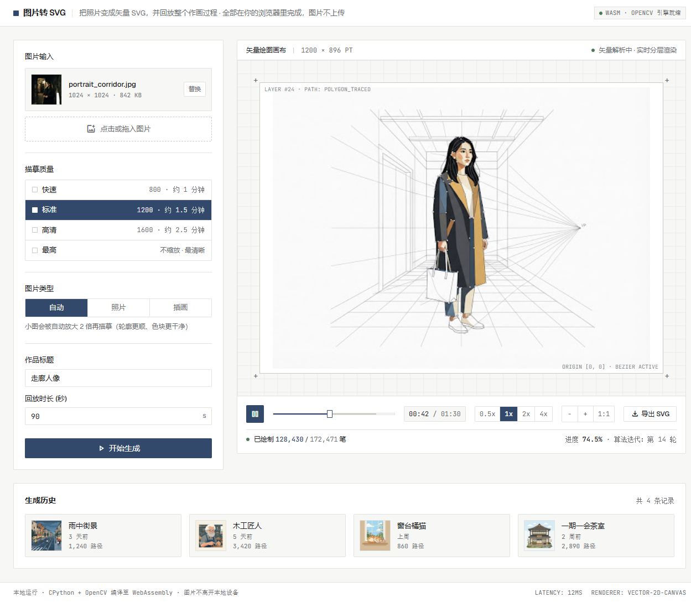
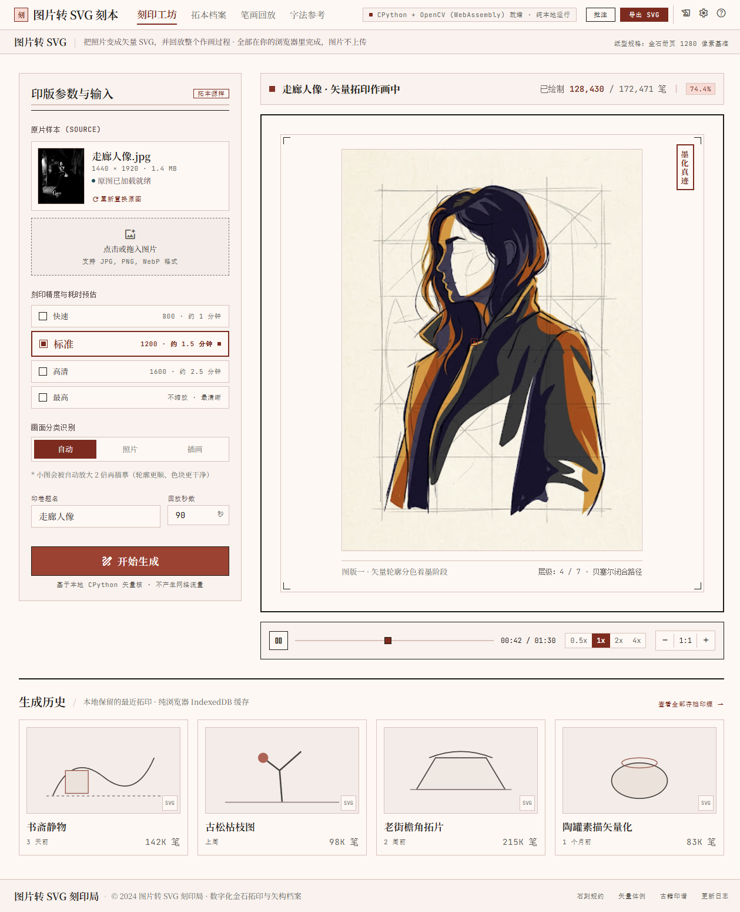
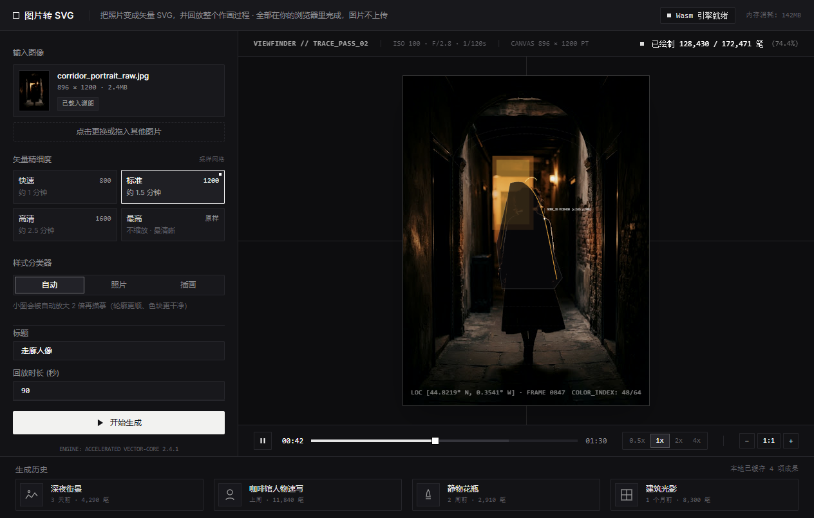

四份都是 Google Stitch 生成的真实网页代码（完整 HTML + Tailwind）， 不是图片。同一套控件、同一份文案、同一个画面，只有设计语言不同。 点「打开」看可交互的原稿。
四个方向的底色 / 强调色 / 字体来自我在 Stitch 里建的设计系统，
取自项目自己的 PRODUCT.md（含它列出的反参考：不要金色奢华风、
不要 01/02/03 编号、accent 不做背景）。

暖近黑工作台，余烬橙只落在「开始生成」和进度上。
衬线标题 + 等宽数字。画布角落带贝塞尔坐标读数
（X: 442.0 Y: 388.5 · 贝塞尔闭合环路），
顶部实时显示 已绘制 128,430 / 172,471 笔 (74.5%)。

工程图纸语言：纸白底、发丝规则线、全站等宽数字。
画布上标 LAYER #24 · PATH: POLYGON_TRACED、
ORIGIN [0,0] · BEZIER ACTIVE，
底栏 进度 74.5% · 算法迭代：第 14 轮，
带「导出 SVG」。页脚 LATENCY: 12MS / RENDERER: VECTOR-2D-CANVAS。

金石拓印语言：宣纸底、墨色、朱砂只用在一处主按钮。
中文排印讲究——「印版参数与输入」「原片样本」「印稿题名」
「图版一 · 矢量轮廓分色着墨阶段」，配竖排印章与
层级: 4 / 7 · 贝塞尔闭合路径。导航为「刻印工坊 / 拓本档案 / 字法参考」。

相机取景器语言，界面上没有任何彩色强调色——
主按钮是近白，颜色全留给画面。带十字准线、
顶部 VIEWFINDER // TRACE_PASS_02 | ISO 100 · F/2.8 · 1/120s、
底部 LOC [44.8219° N, 0.3541° W] · FRAME 0847。
画面用四角括号框住，不用卡片。
stitch/vendor/（共 0.9 MB）：
Tailwind 换成本地脚本，画面素材换成本地图片，字体改用系统字体栈
（中文衬线 → 宋体 / 思源宋体，等宽 → Consolas）。
现在这四份设计稿零外部请求，随便断网都能打开。
只动了这一层资源引用，布局、配色、间距与 Stitch 原稿保持一致。
PRODUCT.md 的用户画像（晚上、室内、桌面前），A 或 D 更贴；
想截图分享或白天用着清爽，B 或 C 更稳。
定下来之后我再往 web/index.html 里落实现 —— 原稿是 Tailwind CDN 的形式，
真上线需要换成项目现有的零依赖写法（项目 README 明确要求不加载任何框架和 CDN）。